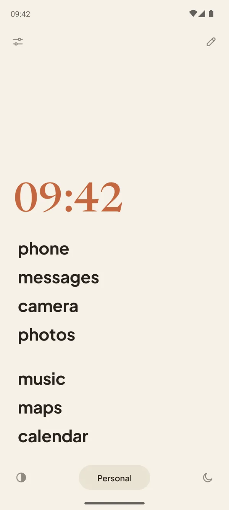
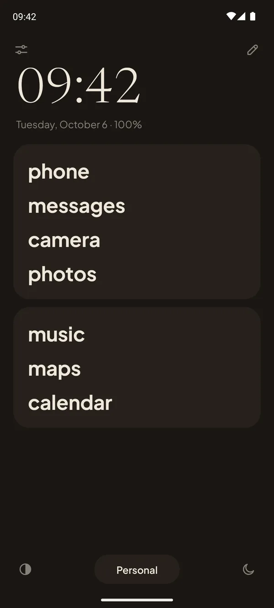
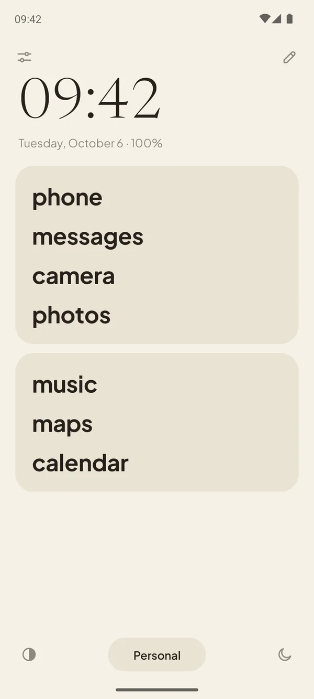
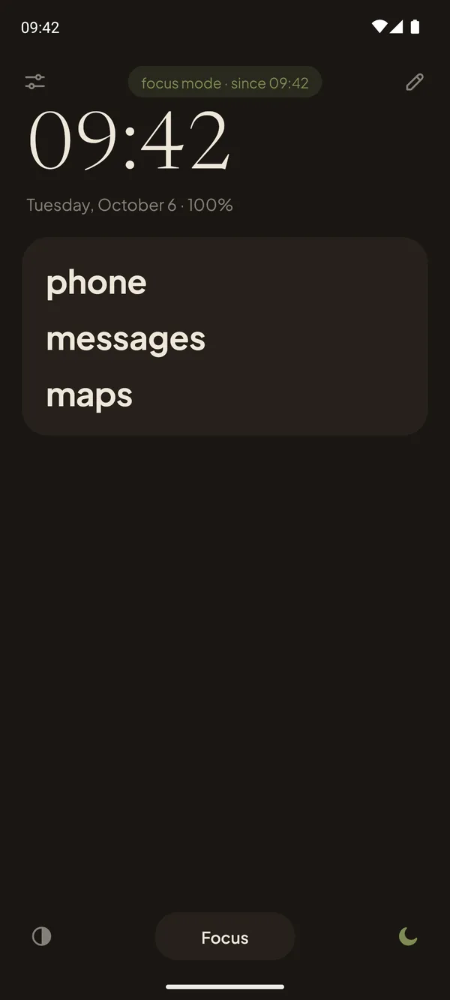
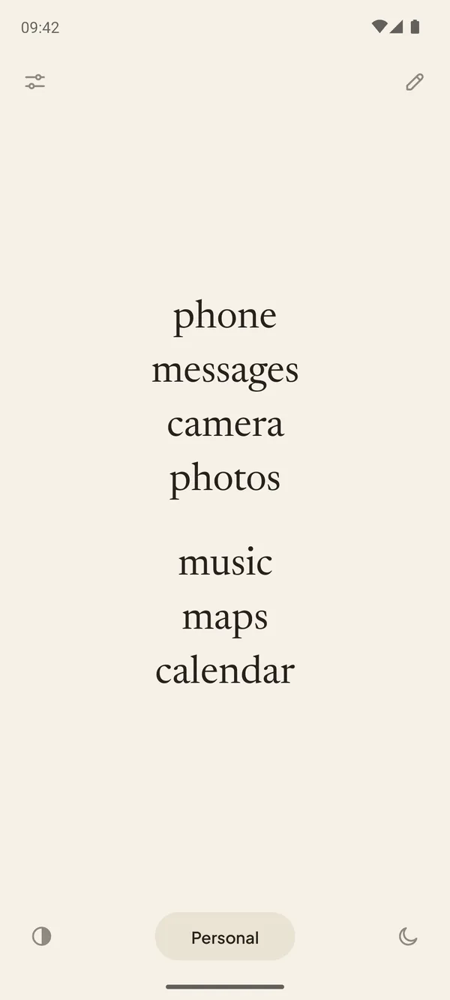
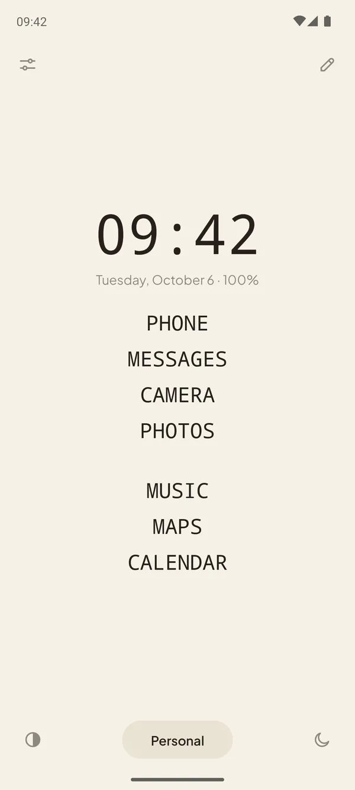
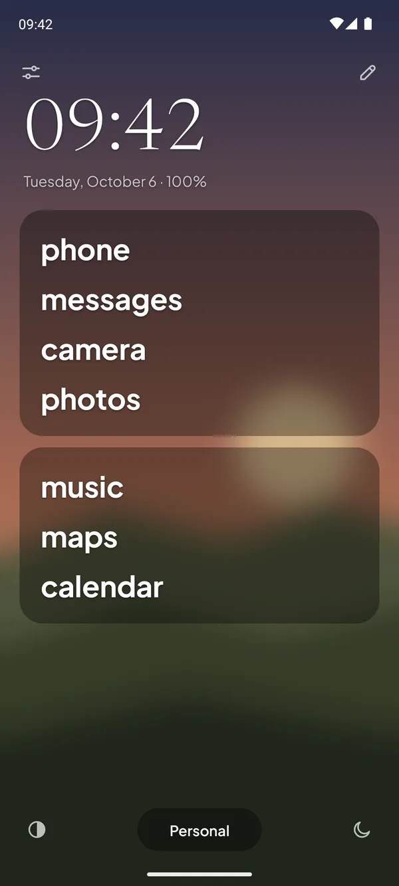

Pauca is a minimalist Android launcher that turns your home screen into a calm list of words. No icons, no red badges, nothing pulling at you. Just the apps you need, with the names you choose.
One-time purchase · No subscription · No ads · No internet permission



Your phone was built to be picked up. Pauca is built to let you put it down.
Bright icons, red dots and endless feeds are designed to catch your eye. Pauca takes them away. What's left is a quiet page of words: you open what you came for, and that's it.
The name comes from the Latin pauca, “few things”, as in Gauss's motto: pauca sed matura, few, but ripe. A phone with fewer things on it, chosen well.
Three steps to a calmer phone.
Choose your few
Put the apps you really use in cards. Everything else stays one swipe away.
Name them your way
“mom” instead of a messaging app, “bank” instead of a long name. Lowercase, as typed or UPPERCASE.
Swipe for the rest
Swipe up to search all your apps, down for notifications. Double tap to lock the screen.
Focus that really silences.
One tap and your phone goes quiet. Or let a profile do it: switch to “Night” and focus starts on its own.
- Do Not Disturb with its own rule, and you choose who can still call
- Notifications held, with a summary when you're back
- A drawer with only the apps you allow
- Other apps paused: open one and you're back home
- A grayscale screen, if you want it

Make it yours.
Five themes, any accent color, and your own fonts, sizes, weight and alignment. Hide the clock, the buttons, even the status bar.
Try an accent color


Your photo, softened.
Use any photo as the background, with blur and brightness, so it stays in the background. On the lock screen too, with its own settings.

And everything else you'd expect.
Profiles
Personal, Work, Night: each with its own cards, one tap away.
A real app drawer
Search, categories and a floating search button. No icons.
Gestures
Swipe up, swipe down, swipe sideways to open an app you choose.
Guided tour
A short tour shows every part of the screen the first time.
Three languages
English, Portuguese and Spanish.
Private space
Works with Android's private space and hidden apps.
Private by design, not by promise.
Pauca has no internet permission. It isn't that we choose not to send your data: the app simply can't. No accounts, no analytics, no ads, no trackers.
Read the privacy policy →Start free. Keep it forever.
Try the essentials with Pauca Lite. When you want everything, Pauca is a single purchase.
Pauca LITE
- App cards with your own names
- Drawer with search and categories
- Gestures for apps and notifications
- Two profiles
- Light and dark themes
- Olive, blue or no accent color
Pauca
Everything in Lite, plus:
- Focus mode that really silences
- Unlimited profiles
- Five themes, your own photo too
- Every accent color, or your own
- Fonts, weight and alignment
- Hide buttons, clock and status bar
- Double tap to lock
Started with Lite? When you install Pauca, your cards and settings come along.
Open, and made with care.
Pauca is open source under the GPLv3, built on Olauncher by Tanuj. Made in Brazil by Gabriel Dias.
Questions
What is Pauca?
Pauca is a minimalist launcher for Android. It replaces your home screen with a calm, text-only list of the apps you choose, with no icons, badges or widgets, and adds a focus mode that really silences your phone. It's made by Gabriel Dias, of Catta Studios, and it's open source under the GPLv3.
Does Pauca turn my phone into a dumbphone?
In spirit, yes: your home screen becomes as simple as a dumbphone's, only words. But it's still your Android phone, and every app stays one swipe away unless you pause it in focus mode.
How much does Pauca cost?
US$ 0.99 as a one-time purchase on Google Play, which shows the price in your currency. There's no subscription and no ads, and updates are included. Pauca Lite is on Google Play now.
Does Pauca collect my data?
No. Pauca has no internet permission, so it can't send anything anywhere. There are no accounts, analytics, ads or trackers, and your cards and settings stay on your phone.
Will it work on my phone?
Pauca works on Android 7 or newer, on any brand, including Samsung Galaxy and Google Pixel.
Can I go back to my old home screen?
Anytime. Pauca is just a home screen app: choose another one in your phone's settings, or uninstall it. Nothing else on your phone changes.
Does it block my apps?
Only if you want. In focus mode, Pauca can pause the apps outside your list. Outside focus, every app is one swipe away.
What's the difference between Pauca and Pauca Lite?
Lite is free and covers the essentials. Pauca adds focus mode, unlimited profiles and full customization, for a one-time price. If you start with Lite, Pauca brings your setup along. Pauca Lite is on Google Play now.
Is there a subscription?
No. You pay once, and updates come with it.
Does it support widgets or icon packs?
No, on purpose. Pauca is about having fewer things on your screen.
Why does it ask for accessibility?
Only Pauca asks, Pauca Lite doesn't. It's only to lock the screen with a double tap and, in focus mode, to pause apps outside your list. It's optional and it doesn't read your screen.